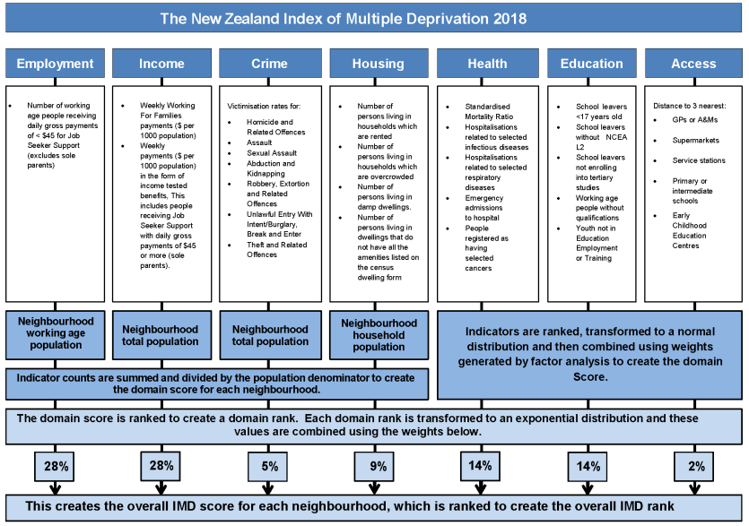

A geographical statistical approach to the 2018 New Zealand Index of Multiple Deprevation
GEOG 351: Quantitative Analysis
Introduction
Short section (1 page). A general statement about which variables you are investigating and how/why existing theory (or your own ideas) predict that they may be related. This section presents your chosen general research questions and explains the general rationale behind them. This section briefly provides the reader with an overview of the study questions; include a very brief summary to what relevant research has been done before
This paper ventures to investigate the links between education, mode of transportation to work, and Maori status to multiple deprevation in New Zealand.
Methods
This section describes - What is the data set analysed - What is the number of variables used and number of cases (number of points in plots) - Give a detailed definition of all the variables you will analyze (nominal, ordinal, interval, ratio), how is it defined? - What methods will be used for each research objective / hypothesis
The 2018 New Zealand Index of Multiple Deprivation (IMD), which created a weighted index (see Figure 1) using measures of employment, income, crime, housing, health, education, and access (Exeter et al. 2018). The IMD
Census data ?@fig-census-import
Results and discussion
Here you develop, in turn, your hypotheses rela5ng to the data, present the results (output tables and graphs) and describe your conclusions or each hypothesis. Deal with each hypothesis fully, in turn, and in some logical sequence. Before you present the results and your interpretation for any test, you should describe each particular hypothesis (which variable are involved in that hypothesis , what is the predicted sign(positive or negative) of effects, etc, what is the test, what does the output tell you?). Then move on to next hypothesis, etc. All graphs, tables and figures should be numbered, referenced in the appropriate place in the text and placed in appendix. You should also include a discussion of post-estimation diagnostics and actions to be taken if basic assumptions are violated. Appendix pages for all graphics are not limited: do not shrink and cram too many plots and output tables per page.
Conclusions
comments on difficulties encountered during the investigation and possible avenues for future research.
Appendices
Appendix 1. Figures

Appendix 2. Code
IMD data import
library(tidyverse)
# For `dplyr`, `readr`, `tidyr`, `tibble`, and `ggplot2`
imd18 <- readxl::read_excel("IMD2018.xlsx", sheet = "IMD18")
# Import IMD Census data import and cleaning
# Import and clean education data
education <- read_csv("2018-census-place-summaries-csv/2018-census-place-summaries-education-table2-2018-csv.csv") %>%
filter(Area_type == "Statistical Area 2")
education <- education %>%
filter(Maori_ethnic_group_indicator_summary_description == "Total") %>%
select(Year, Area_type, Area_code, Highest_qualification_description, Highest_qualification_percent) %>%
pivot_wider(names_from = Highest_qualification_description, values_from = Highest_qualification_percent) %>%
select(!c(`Not elsewhere included`, Total))
# Importing and cleaning ethnicity data
ethnicity <- read_csv("2018-census-place-summaries-csv/2018-census-place-summaries-ethnicity-table1-2018-csv.csv") %>%
filter(Area_type == "Statistical Area 2")
ethnicity <- ethnicity %>%
select(Year, Area_type, Area_code, Maori_descent_description, Maori_descent_indicator_percent) %>%
pivot_wider(names_from = Maori_descent_description, values_from = Maori_descent_indicator_percent) %>%
select(!c(`Response unidentifiable`, `Not stated`, `Total`))
# Cleaning transport data, spitting out the percentage of modes used for work, selecting SA2
transport <- read_csv("2018-census-place-summaries-csv/2018-census-place-summaries-transport-table1-2018-csv.csv")
transport <- transport %>%
select(Year, Area_type, Area_code, `Main_means_of_travel_to_work_description`, `Main_means_of_travel_to_work_percent`) %>%
pivot_wider(names_from = `Main_means_of_travel_to_work_description`, values_from = `Main_means_of_travel_to_work_percent`) %>%
filter(Area_type == "Statistical Area 2") %>%
select(!c(`Did not go to work today`, `Not elsewhere included`))
# Binding the census data together
vars <- left_join(education, ethnicity, by = "Area_code") %>%
left_join(., transport, by = "Area_code")
vars <- vars %>%
select(!c(Year, Year.y, Area_type.y, Area_type.x, Area_type)) %>%
rename(
`Total Education` = `Total stated.x`,
`Year` = Year.x,
`Total Ethnicity` = `Total stated.y`,
`Total Transport` = `Total stated`
)
# Creating groupings for education
vars <- vars %>%
mutate(
Secondary = as.numeric(`Level 1 certificate`) + as.numeric(`Level 2 certificate`) + as.numeric(`Level 3 certificate`) + as.numeric(`Overseas secondary school qualification`),
`Some University` = as.numeric(`Level 4 certificate`) + as.numeric(`Level 5 diploma`) + as.numeric(`Level 6 diploma`),
Tertiary = as.numeric(`Bachelor's degree and level 7 qualification`) + as.numeric(`Post-graduate and honours degrees`),
`Post-tertiary` = as.numeric(`Master's degree`) + as.numeric(`Doctorate degree`),
`Any University` = as.numeric(`Level 4 certificate`) + as.numeric(`Level 5 diploma`) + as.numeric(`Bachelor's degree and level 7 qualification`) + as.numeric(`Post-graduate and honours degrees`) + as.numeric(`Master's degree`) + as.numeric(`Doctorate degree`)
) %>%
select(!c(`Level 1 certificate`, `Level 2 certificate`, `Level 3 certificate`,
`Level 4 certificate`, `Level 5 diploma`, `Level 6 diploma`,
`Bachelor's degree and level 7 qualification`, `Post-graduate and honours degrees`,
`Master's degree`, `Doctorate degree`))New Zealand uses a unique method of classifying education attainment, with a 7 level certificate / diploma system. I compiled this information to be as comparable as possible to the Canadian system of “Secondary”, “Some University”, “Bachelors”, “Masters”, and “Doctorate”. I also combined these to make variables that combined any university experience and any university degree past a Bachelors.
Spatially combined data import
# Import combined data output from ArcGIS Pro
analysis <- read_csv("data.csv")
# Yes, this data set is messy.
# Sorry (to myself).
# Mutate variables that show a logistic distribution
analysis <- analysis %>%
mutate(
log_maori = log(Maori),
log_bus = log(Bus),
log_bike = log(Bicycle1)
)